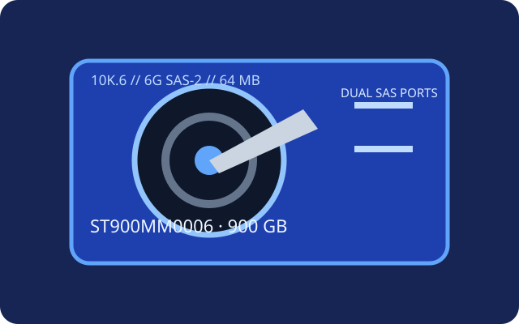

[ IDENTIFIED HDD // MODEL-SPECIFIC RECORD ]
Seagate Savvio 10K.6 ST900MM0006
900 GB 10,000-rpm 2.5-inch enterprise SAS HDD. This model is a SAS-2 generation drive, not a 15K SAS model.

Recorded specifications
| Exact model | Seagate Savvio 10K.6 ST900MM0006 |
|---|---|
| Capacity | 900 GB |
| Sector format | 512-byte logical sector; 512/520/528 sector-format options may depend on original OEM format |
| Interface / ports | SAS-2, 6 Gbit/s, dual-port |
| Rotational speed | 10,000 rpm |
| Cache | 64 MB |
| Form factor | 2.5-inch, 15 mm class |
| Workload / reliability | Workload rating is not stated in the cited model manual. Seagate specifies 2,000,000-hour MTBF; it is a population rating, not an individual lifetime or warranty. |
Host compatibility and qualification
- Requires a SAS HBA/controller and SAS backplane/expander. SATA-only hosts are incompatible. The SAS-2 link is 6G maximum; verify the controller's firmware, drive support and carrier/power arrangement.
- Legacy SAS drives can use OEM-formatted sector sizes; inspect the actual logical block size and ensure the host/RAID array can use it before adding the drive.
- MTBF is statistical, not a remaining-life estimate. Use supported diagnostics and keep verified data copies; a same-size SATA replacement is not interface-compatible.
Manufacturer sources
- Seagate — Savvio 10K.6 SAS product manualManufacturer model-family manual with interface, mechanics and reliability specifications.
- Seagate — official support and drive documentationManufacturer support resource to match firmware and current records to the drive label.